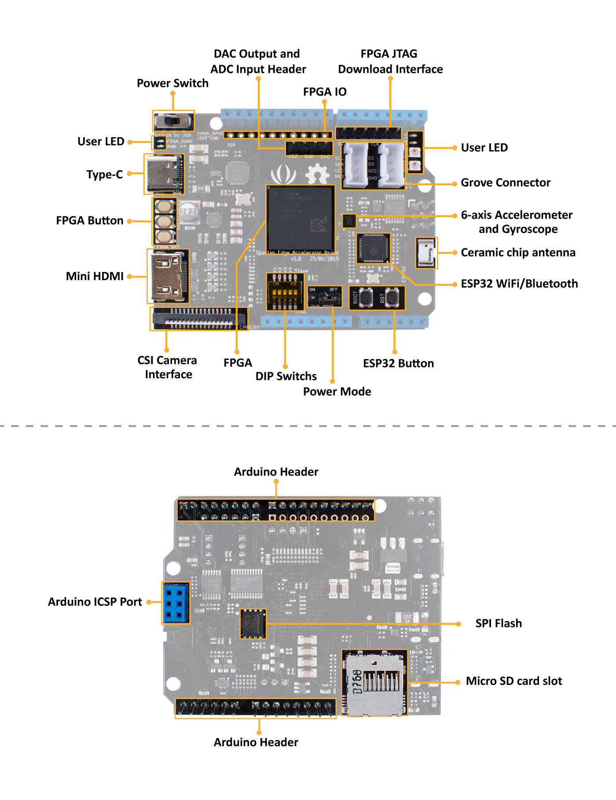

Spartan Edge Accelerator Board is a Xilinx Spartan FPGA development board in the Arduino UNO shield form factor. It can work with Arduino as an FPGA shield and as a stand-alone FPGA development board. With the onboard ESP32 chip, the Spartan Edge Accelerator Board also features 2.4GHz WiFi and Bluetooth 4.1.
Moreover, this development board has a wealth of peripherals and interfaces which are extremely playable. Such as an 8-bit ADC, a 6-axis accelerometer, two RGB LEDs, a MINI HDMI interface, a CSI camera interface, two Grove interfaces, etc. All in all, it will be a perfect FPGA board for Makers and Hobbyists.
We know you love ESP32, so we used it as the wireless core. It supports 802.11 b/g/n 2.4GHz WiFi as well as Bluetooth 4.1 with BLE. Just a single board to enable your Arduino with FPGA and Wireless function, isn't it amazing?
Hardware Overview

Arduino FPGA API
On top of that, we provide a full Arduino FPGA API to help you use FPGA resources to control FPGA I/Os with Arduino IDE even if you know nothing about the FPGA theory. Spartan Edge Accelerator Board will equip Arduino with the ability that was once unimaginable, such as edge technology, image recognition, signal sampling and processing, and so on.